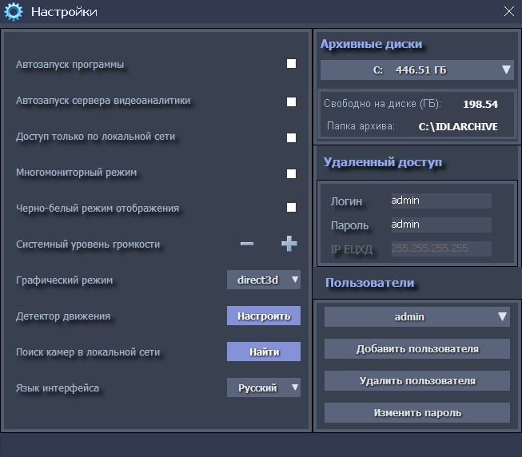
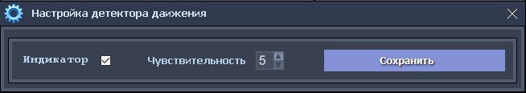

Форма «Настройки»
Форма «Настройки»
Эта форма содержит все настройки программы и автоматически сохраняет внесенные изменения.

Флажок «Автозапуск программы» позволяет включить программу в автоматический запуск компьютера и используется, в основном, после установки всех подключений к камерам.
Флажок «Автозапуск сервера видеоаналитики» позволяет выбрать автоматический запуск сервера видеоаналитики, при старте программы. При автоматическом запуске, сервер видеоаналитики приступит к запуску выполнению активных сервисов, согласно установленным расписаниям.
Флажок «Доступ только по локальной сети», позволяет использовать программу в режиме работы с ограниченным внешним (Интернет) доступом. При выборе этого режима, все клиенты системы «iDLook», должны быть в составе локальной сети.
Флажок «Много мониторный режим» позволяет использовать несколько мониторов подключенных к видеокарте. При использования этого режима, все подключенные мониторы, должны иметь одинаковое экранное разрешение FullHD. Расположение и размер окон камер на экранах мониторов, в этом режиме, рассчитываются автоматически.
Флажок «Черно-белый режим отображения», позволяет изменить режим отображения камер на рабочем экране, на черно-белый.
Выпадающий список «Графический режим» позволяет установить требуемый экранный режим отображения камер.
Селектор «Системный уровень громкости», позволяет изменять громкость звука компьютера.
Кнопка «Настроить», в пункте «Детектор движения», позволяет произвести настройку встроенного детектора движения. При нажатии на нее, откроется форма базовых настроек детектора движения:

На этой форме, флажок «Индикатор», позволяет включить или отключить индикацию детектора движения (зеленый кружок в левом верхнем углу окна камеры), а селектор «Чувствительность» позволяет менять, в диапазоне 1-10, установленное значение чувствительности. Измененные значения сохраняются нажатием на кнопку «Сохранить». Изначально, для всех подключенных камер применяются, единые базовые настройки детекции движения. Индивидуальные настройки детектора движения и выбор зоны детекции, для каждой камеры, можно произвести непосредственно при их подключении.
Поиск камер в локальной сети, обычно производится при добавлении новых камер, и может быть вызван нажатием на кнопку «Найти».
Сменить язык интерфейса программы и всех сообщений/уведомлений, можно с использованием выпадающего списка «Язык интерфейса».
В правой верхней части формы отображается панель «Архивные диски», на которой отображаются обнаруженные системой логические и сетевые диски, отображаются их размер, объем свободного дискового пространства и путь к сетевой папке. Под этой панелью расположена панель «Удаленный доступ», на которой задаются логин и пароль (по умолчанию admin/admin) для доступа удаленных клиентов, к системе видеонаблюдения. Также, при интеграции с «Единым центром хранения и обработки данных», задается и IP-компьютера в составе локальной сети ЕЦХД (он предоставляется специалистами ЕЦХД). В целях безопасности, рекомендуется сменить дефолтные логин/пароль доступа.
Ниже, расположена панель «Пользователи», на которой можно добавить или удалить пользователей и задать текущего пользователя программы iDLook. При первом старте, по умолчанию, определен один пользователь admin, с паролем admin. В целях безопасности, рекомендуется сменить дефолтного пользователя, создав нового пользователя с более безопасным паролем.